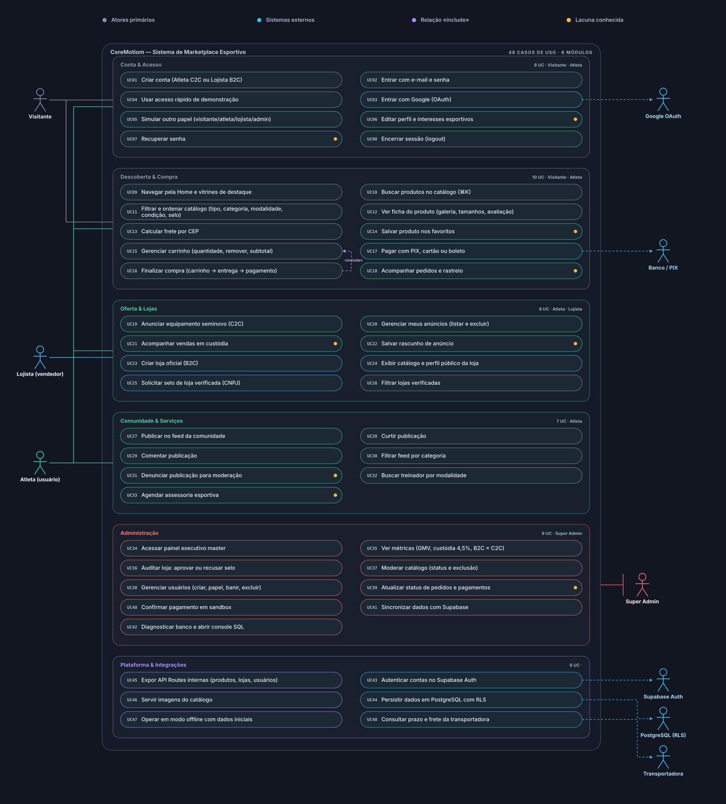

C
Casos de uso do CoreMotiom
O que dá para fazer na plataforma, em 48 situações do dia a dia
Como ler
Baixar imagem
Baixar página
Ver tudo
Conta e acesso
Descobrir e comprar
Oferta e lojas
Comunidade e serviços
Administração
Plataforma e integrações

Não foi possível carregar o desenho. Mantenha o arquivo diagrama.svg na mesma pasta desta página.
Arraste para andar pelo desenho · use a roda do mouse para aproximar
100%